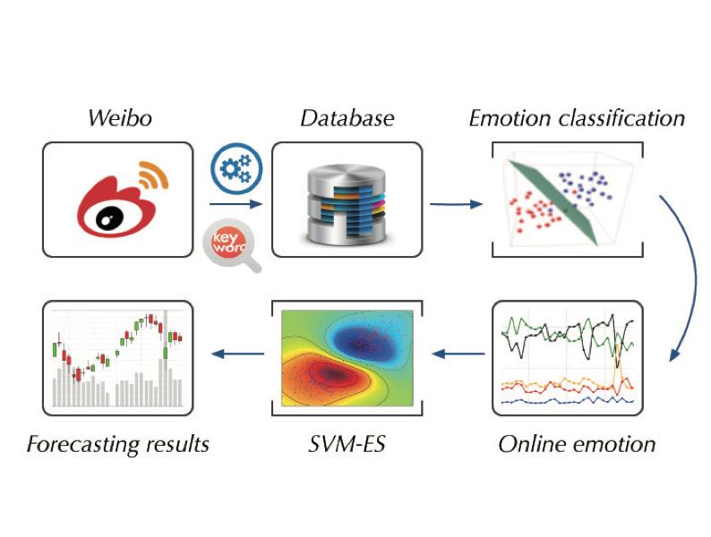

已发表（Publications）

Political polarization of news media and influencers on Twitter in the 2016 and 2020 US presidential elections
Nature Human Behaviour, 2023.
J. Flamino, A. Galezzi, S. Feldman, M. W Macy, B. Cross, Z. Zhou, M. Serafino, A. Bovet, H. A Makse, B. K Szymanski

Predicting Intrinsic and Extrinsic Goal Contents Pursuit on Social Media
CYBERPSYCHOLOGY, BEHAVIOR, AND SOCIAL NETWORKING, Vol. 25, No. 8, 2022.
M Yu, Z Zhou*

Why polls fail to predict elections
Journal of Big Data, Volume 8, Article number: 137 (2021).

Homophily of Music Listening in Online Social Networks of China
Social Networks, Volume 55, October 2018, Pages 160-169.

Extroverts Tweet Differently from Introverts in Weibo
EPJ Data Science, 2018. 7:18.

Tales of Emotion and Stock in China: Volatility, Causality and Prediction
World Wide Web, 2017.


Can Online Emotions Predict the Stock Market in China?
Web Information Systems Engineering (WISE), 2016.
*Best Paper Award Honorable Mention
工作论文（Working paper）
DoubleH: Twitter User Stance Detection via Bipartite Graph Neural Networks
arXiv, 2023.
Chong Zhang, Zhenkun Zhou*, Xingyu Peng, Ke Xu
Online Social Behavior Enhanced Detection of Political Opinions in Tweets
Forthcoming, 2023.
Xingyu Peng, Zhenkun Zhou*, Chong Zhang, Ke Xu
When Cyber Aggression Prediction Meets BERT on Social Media
arXiv preprint arXiv:2301.01877, Jan 2023.
Z Zhou, M Yu, Y He, X Peng
Predicting China's CPI by Scanner Big Data
arXiv preprint arXiv:2211.16641, Dec 2022.
Z Zhou, Z Song, T Ren
Losses Loom Larger than Gains: Evidence from Online Social Network in China
Forthcoming, 2023.
Russian Trolls on Twitter during the U.S. Presidential Election
Forthcoming, 2023.
Political Stance Detection through DoubleH information across Bi-Graph Network
Forthcoming, 2023.
The Impact of Customer Online Satisfaction on Stock Returns
Forthcoming, 2023. With Danni Wu.
Analyzing Influencers in the Ethereum network
Forthcoming, 2023.
Online Applications 在线项目

Live Daily Prediction Using Artificial Intelligence
Through collecting a massively large number of tweets and building machine learning models, Zhenkun Zhou and
Hernan Makse investigate the dynamics of the Twitter social network formed by the interactions among
millions of Twitter supporters. We then infer the opinion of each user with Artificial Intelligence on the
candidates of the 2019 Argentina presidential election.
SONG IS U
This project is collecting kinds of real-time data in Netease Music platform, including the massive user
listening behaivor.
Through online analyzing the indivdual and collective listening records, we uncover ''WHO ARE U'' in
music.

Stock Prediction System with SVM-ES
The system applies the SVM based on online emotions to predict the price and volume of stock market in
China.
It provides the prediction results to Company of Warming Technology for paid service.